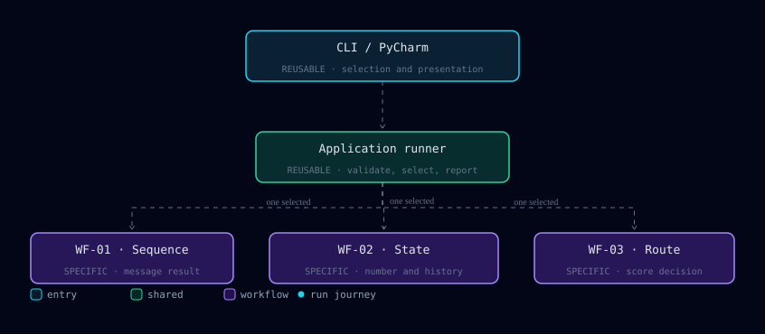
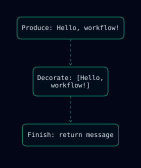
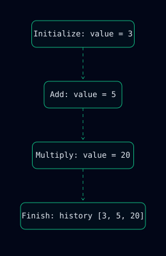
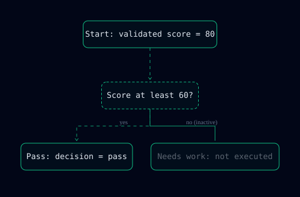
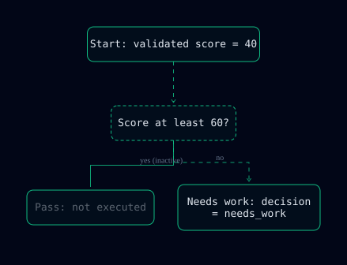

The shared shell
Reusable entry points and three independent workflow packages.
Open animation → · Static SVGThree small workflows. One new capability at a time. Open an animation, pause it, and expand the numbered notes to inspect expected values. These illustrations explain the proposed design; they are not recorded program runs.

Reusable entry points and three independent workflow packages.
Open animation → · Static SVG
Follow a string through start and listen.
Open animation → · Static SVG
Inspect value and history after every step.
Open animation → · Static SVG
Score 80 selects exactly one successful branch.
Open animation → · Static SVG
Score 40 selects the other valid outcome.
Open animation → · Static SVG